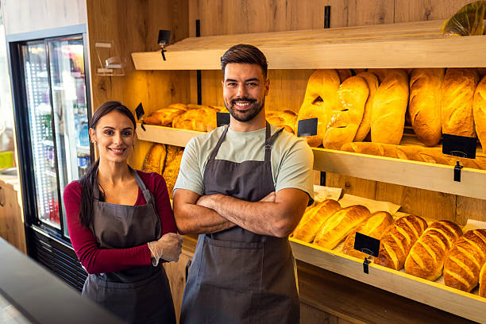

About Baked With Love By Reo
History
Baked With Love By Reo is a small local bakery that provides cakes, cupcakes and bread. It was founded 2024 in Bloemfontein. Reo is passionate about baking and creating delicious treats for special occassions. The baker wanted to bake quality goods that bring comfort to consumers. As time went by, the bakery gained popularity through social media and the word of mouth.
Mission
To provide freshly baked, premium goods that bring joy to customers.
Vision
To be a bakery that spreads happiness and warmth in people's households, offering good quality products.
